my treasure box
－1999/3/5－
無事に金沢についた私は、能登半島と兼六園を回りました。
| ○石川県金沢市 発 |
| ＝＞ 国道８号線 －＞ 能登道路 －＞ 国道２４９号線 －＞ 国道８号線 －＞ 北陸自動車道 －＞ 名神高速道路 ＝＞ |
| ○大阪府大阪市 着 |
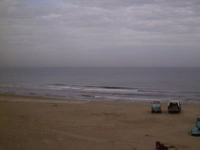
ついに来ました。日本海。
～輪島～
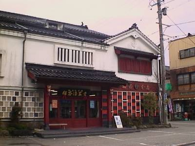
能登半島といえば・・・輪島。ということでまず、輪島に到着です。この写真は輪島塗漆器の販売店です。結構派手かも。こういう店もあれば・・・
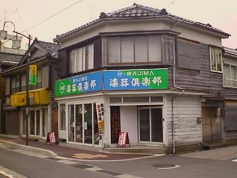
こういう店もありました。
～能登半島１～
半島の西部にある輪島から半島一周を目指します。
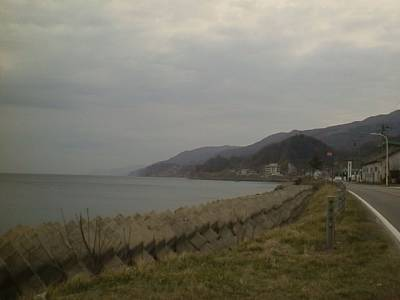
これは輪島から、北東方向を見た風景。
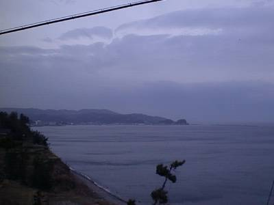
北東方向から輪島方面を見た風景。
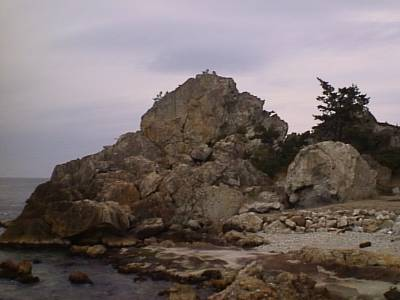
途中に大きな岩がありました。雄大です。
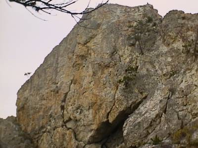
これが中心部のアップ。圧倒されます。
～恋路～
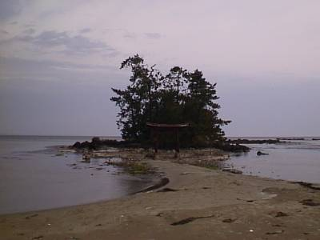
能登半島には「恋路」と呼ばれる町があります。これは、その恋路の海岸です。歩いて渡れる小さい「島」の前に小さな鳥居。美しい風景です。
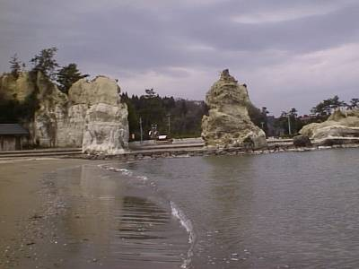
波は穏やか。静かに打ち寄せます。島に向かって左側の奥は、浸食を受けた岩石に囲まれた公園になっています。
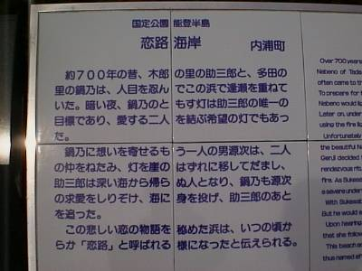
「恋路」という名前を聞くとロマンティックなイメージを受けますが、実際にはそうではないようです。上で述べた公園には、「恋路」の由来が示されていました。どうやら、ロミオとジュリエットばりの悲劇が由来になっているようです。
～能登半島２～
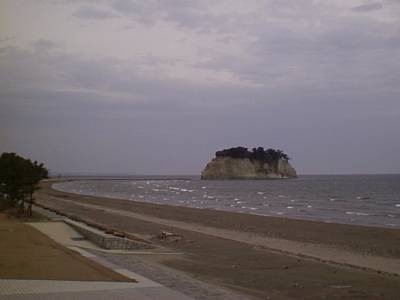
国道に沿ってそのまま一周しました。半島の東側。見附島が見えてきます。
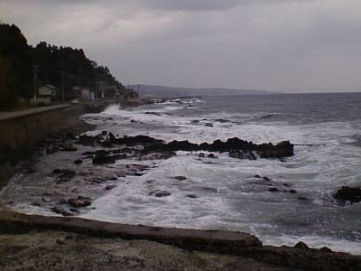
半島の東側は波も荒く日本海の厳しい一面をのぞかせます。
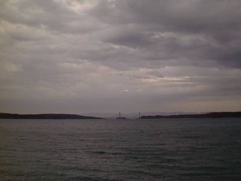
この日は大荒れの天気でした。その中でとったこの写真は、能登半島と能登島を結ぶ能登島大橋です。ちょっと見えづらいかな・・・。
～兼六園～
金沢といえば、これでしょう。ということで兼六園に行って来ました。上でも述べたように雨・風が非常に強かったですが、なんとか撮影敢行です。
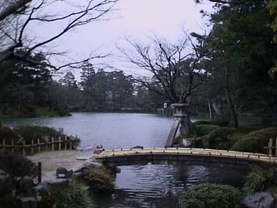
霞ヶ池と、徽軫（ことじ）灯籠。
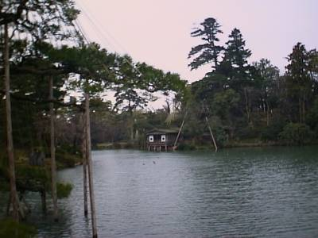
霞ヶ池と、内橋亭。
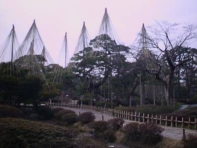
唐崎松（からさきのまつ）。
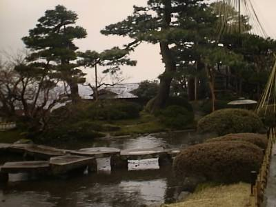
雁行橋と七福神山。
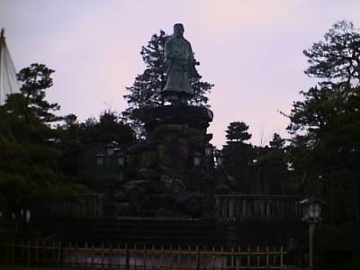
明治紀念之標。
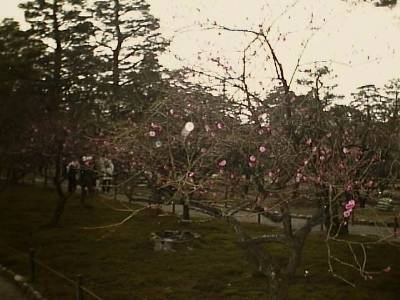
兼六園菊桜。
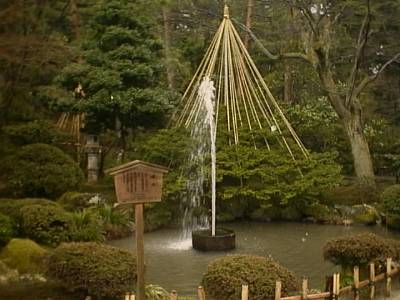
噴水。
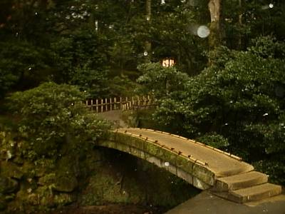
黄門橋。
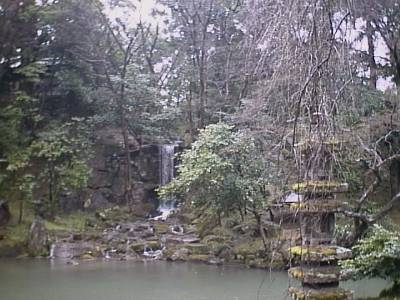
翠滝と海石塔。
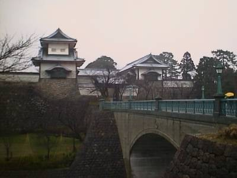
そして石川門。
と兼六園を堪能。